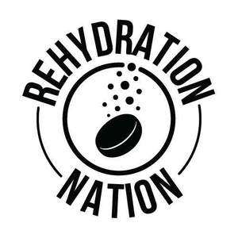

Trade Mark Journal No.2025/020 16 May 2025
UK00004194561 25 April 2025 (5,30,32)

- Class 5
- Nutritional supplements; dietary supplements for hydration, fitness, and endurance; electrolyte supplements; vitamin and mineral preparations; effervescent tablets for hydration; dissolving or effervescent tablets and powders for making electrolyte replacement drinks; powdered electrolyte replacement drink mixes; dietary supplements containing sodium, potassium, calcium, magnesium, and other minerals; multivitamins; effervescent vitamin tablets; gummy vitamins; probiotic supplements; vitamin and mineral supplements for supporting digestive health, cognitive function, joint health, and overall well-being; antioxidant food supplements; energy supplements; dietary supplements in the form of tablets, capsules, powders, gels, or liquids; energy gels and liquid carbohydrate syrups, including those containing caffeine; dietary supplements consisting of trace elements and amino acids; vitamin supplements in tablet form for use in making effervescent and non-effervescent beverages when added to water.
- Class 30
- Non-medicated confectionery; hydration sweets and lollipops; hydration gummies; vitamin-enriched sweets; multivitamin-enriched sweets; functional confectionery containing electrolytes, minerals or vitamins; non-medicated chewing gum and candies for hydration or energy; cereal, fruit, plant or nut-based food bars; energy bars made with cereal, fruit, plant or nuts; carbohydrate-based confectionery and syrups for energy and hydration purposes; energy gels and liquid carbohydrate syrups, including those containing caffeine, for use as foodstuffs or additives for foodstuffs or non-alcoholic drinks; cereal preparations; snack foods consisting of grains, cereals or fruit with added vitamins or minerals.
- Class 32
- Non-alcoholic beverages; hydration drinks; sports drinks; isotonic, hypotonic, and hypertonic beverages; energy drinks; energy drinks containing caffeine; recovery drinks; vitamin-enriched beverages; nutritionally fortified beverages; electrolyte beverages; mineral-enriched water-based drinks; non-alcoholic drinks enriched with mineral salts; plant-based vitamin drinks; beverages based on plant extracts; powdered drink mixes and dissolving or effervescent tablets for preparing hydration, energy, and recovery beverages; powdered mixes for making sports drinks, energy drinks, and protein drinks; dissolving or effervescent tablets used to make hydration drinks, sports drinks, energy drinks and protein drinks; vitamin-fortified non-alcoholic beverages; protein-enriched sports .
The Snacking Company Limited